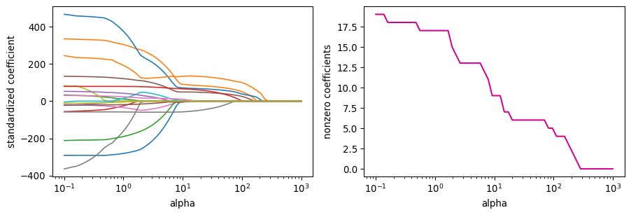

Z = StandardScaler().fit_transform(X)alphas = np.logspace(-1, 3, 60)paths = np.array([Lasso(alpha=a, max_iter=200000).fit(Z, y).coef_ for a in alphas])n_nonzero = (paths !=0).sum(axis=1)fig, axes = plt.subplots(1, 2, figsize=(9.5, 3.3))for j inrange(X.shape[1]): axes[0].plot(alphas, paths[:, j], lw=1.2)axes[0].set_xscale("log")axes[0].set_xlabel("alpha")axes[0].set_ylabel("standardized coefficient")axes[1].plot(alphas, n_nonzero, color="#d5008f")axes[1].set_xscale("log")axes[1].set_xlabel("alpha")axes[1].set_ylabel("nonzero coefficients")plt.tight_layout()plt.show()

Compare the left panel to the ridge paths from Friday. What does a lasso path do that a ridge path never does?
The right panel is a staircase down to zero. At roughly what alpha does the model become the null model?
Ridge would give a right panel that is a flat line at 19. Say why, in terms of the two penalties.
Part 2: Choosing alpha
rows = []for a in alphas: m = make_pipeline(StandardScaler(), Lasso(alpha=a, max_iter=200000)) s =-cross_val_score(m, X, y, cv=cv, scoring="neg_mean_squared_error") rows.append({"alpha": a,"cv_mse": s.mean(),"cv_se": s.std(ddof=1) / np.sqrt(10),"nonzero": int((m.fit(X, y)[-1].coef_ !=0).sum()), })lasso_cv = pd.DataFrame(rows)best = lasso_cv["cv_mse"].idxmin()lasso_cv.iloc[[best]].round(2)
alpha
cv_mse
cv_se
nonzero
16
1.22
114827.82
21771.56
17
Which alpha minimizes cross-validated MSE, and how many predictors does that model keep?
Apply the one standard error rule from Meeting 8: take the largest alpha whose cv_mse is within one cv_se of the minimum. How many predictors survive now?
Name them. Compare that set to the forward stepwise path from Meeting 8. How much do the two procedures agree?
The one standard error rule wants the simplest model that is still competitive. For the lasso, simpler means a larger penalty, so take the maximum alpha that clears the threshold rather than the minimum.
Rank the three by cross-validated MSE. How large are the gaps compared to the fold-to-fold standard error in Part 2?
Ridge uses all 19 predictors and gets essentially the same error as the lasso. If the two tie on error, on what other grounds would you choose between them?
Least squares is the worst of the three even though it minimizes training RSS by construction. Explain.
Part 4: When each one wins
Two simulations, both with 50 observations and 45 predictors. The first has 45 nonzero true coefficients. The second has 2.
Which l1_ratio wins on this data, and what does that say about Hitters?
Read the column of best MSEs down the l1_ratio grid. How much does the answer actually depend on the choice?
Elastic net has two tuning parameters instead of one, and the grid above fits 180 models per fold. What does the extra flexibility buy you here?
If you finish early
Re-run Part 4’s sparse simulation with p = 60 and n = 50, so there are more predictors than observations.
Least squares cannot be fit at all now. Both ridge and the lasso still run. The lasso can select at most \(n\) predictors when \(p > n\). Why would that limit ever be a problem?
Hitters data from James, G., Witten, D., Hastie, T., Tibshirani, R., and Taylor, J. (2023). An Introduction to Statistical Learning with Applications in Python. Springer. The 50 by 45 data are simulated.